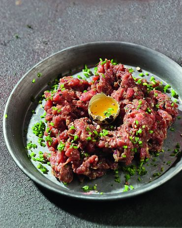

Тартар из говядины
Перейти на гланую

Ингредиенты:
- говяжья грудинка мраморная 150гр.
- лук красный ялтинский 1 шт.
- горчица сладкая 1 ст.л.
- бальзамический крем 1 ст.л.
- яйца перепелиные 1 шт.
- лук зеленый 2 перышка.
Как приготовить:
- Говядину нарежьте мелкими кубиками, сладкий лук очистите и измельчите.
- Смешайте в миске говядину, лук, горчицу, бальзамический крем, посолите и поперчите.
- Переложите тартар на тарелку, вымойте перепелиное яйцо, разбейте его и поместите желток на тартар. Посыпьте блюдо мелко рубленным зеленым луком и подавайте.